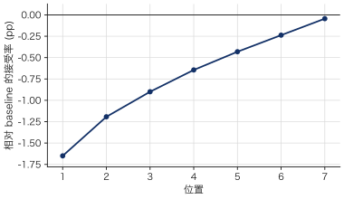
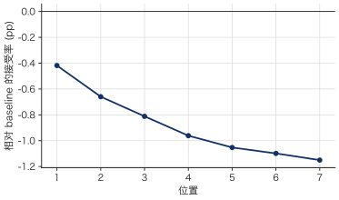
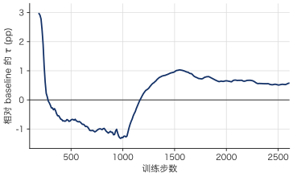
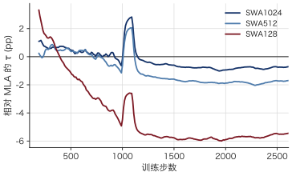
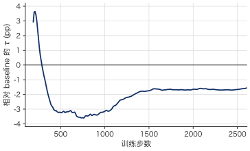
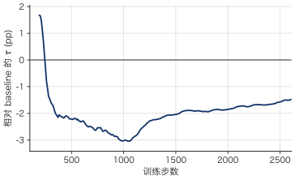

Qwen3-4B DSpark
1 Design
1.1 Baseline Design
DSpark baseline 读取 Qwen3-4B 的中间层隐藏状态，用五层 GQA backbone 并行预测接下来 7 个位置的基础 logits，再由 Markov head 根据前一个 token 逐步修正。Target、token embedding 和 LM head 均冻结。并行预测与顺序采样的推导见 Speculative Decoding §5.2 DSpark。
下表列出 offline 训练消融使用的 baseline 配置。
| 项目 | 设置 |
|---|---|
| 最大序列长度 | 4096 tokens（完整对话，含 prompt 与 response） |
| Draft 架构 | 5 层；隐藏维度 2560；FFN 中间维度 9728；GQA：32 个 Q heads、8 个 KV heads，head dim 128 |
| Aux 层 | [1, 9, 17, 25, 33] |
| Block size | 7；Backbone 输入为 [anchor, MASK × 6] |
| Anchor 采样 | 每个样本最多 512 个 |
| 监督 | 仅监督 response |
| Markov head | Vanilla，rank 256 |
| Batch size | 4 GPUs × micro-batch 1 × 梯度累积 128；global batch 512 |
| 学习率 | 峰值 \(6\times10^{-4}\)；warmup 比例 0.04；完整计划为 26,160 步 |
| Loss | \(0.1L_{\mathrm{CE}}+0.9L_{\mathrm{L1}}+L_{\mathrm{conf}}\)；位置权重为 \(\exp(-i/4)\)，\(i=0,\ldots,6\) |
| 训练步数 | 2,616 optimizer step，约一个 epoch |
| 总参数量 | GQA baseline：1,393,133,569（约 1.393B；含冻结的 embedding 与 LM head，不含 target backbone） |
| 可训练参数量 | GQA baseline：615,221,249（约 615.2M） |
1.2 Ablation Design
以下训练消融均以 GQA baseline 为对照，各改一项；SWA 以 MLA 为对照。
\(\blacksquare\)Tau loss. 附加
系数 0.1。CE 与 L1 仍按位置衰减，该项不衰减。
\(\blacksquare\)MLA. 将 backbone attention 替换为 MLA。32 个 query heads，每头 QK 为 64 content + 64 RoPE，V 为 128，KV latent 为 512。
\(\blacksquare\)SWA. 在 MLA 上将历史窗口限制为 \(W\in\{1024,512,128\}\)。对位置为 \(a\) 的 anchor，历史范围固定为 \([\max(0,a-W+1),a)\)，块内仍双向可见。
\(\blacksquare\)Context-only. 移除当前 draft block 的 K/V，只读取早于 anchor 的 target context，保留 anchor 输入。
\(\blacksquare\)All-mask. 将 backbone 输入改为 [MASK × 7]，保留块内双向 attention。Markov head 仍从 anchor token 开始生成。
\(\blacksquare\)三层 aux. 将 target 特征层改为 [1, 17, 33]。
1.3 Markov MLA
该变体将 backbone attention 替换为 MLA，并在原有 Markov head 的 W₁ → W₂ 之间加入 MLA。Backbone 并行计算各位置的基础 logits，Markov head 则根据上一个生成 token 和 target context，逐步修正 logits 并采样。

五层 target features 按 token 拼接，经 FC 和 RMSNorm 融合为 \(C\)。Markov MLA 的 Q 来自上一个 token 的 embedding \(z_i=W_1[x_{i-1}]\)，K/V 由 \(C\) 投影得到。以本轮起始 token \(x_0\) 为边界，所有生成步骤都读取同一段早于 \(x_0\) 的 context：
其中 \(\ell_i^0\) 为 backbone 的基础 logits，\(b_i\) 为 Markov 修正项。Markov MLA 不加残差，其投影权重与 backbone 独立。
2 Training Metrics
| 实验 | CE ↓ | L1 ↓ | Acc. ↑ | τ ↑ | Δτ |
|---|---|---|---|---|---|
| GQA baseline | 1.1191 | 0.4550 | 74.35% | 4.9591 | 0.00% |
| GQA + tau loss | 1.1260 | 0.4546 | 74.34% | 4.9860 | +0.54% |
| MLA | 1.1402 | 0.4623 | 74.00% | 4.9368 | -0.45% |
| MLA + SWA1024 | 1.1571 | 0.4690 | 73.65% | 4.9008 | -1.17% |
| MLA + SWA512 | 1.1853 | 0.4787 | 73.16% | 4.8523 | -2.15% |
| MLA + SWA128 | 1.2830 | 0.5140 | 71.35% | 4.6668 | -5.89% |
| GQA context-only | 1.1795 | 0.4767 | 73.30% | 4.8718 | -1.76% |
| GQA all-mask | 1.1860 | 0.4780 | 73.51% | 4.8791 | -1.61% |
| GQA 三层 aux | 1.1676 | 0.4735 | 73.36% | 4.8837 | -1.52% |
2.1 Tau loss
Tau loss 使 \(\tau\) 提高 0.54%，收益主要出现在后续位置和训练中后期。

2.2 MLA 与历史窗口
MLA 的可训练参数从 615.2M 降至 612.1M，\(\tau\) 下降 0.45%，差距未随 draft 位置明显扩大。

MLA 的压缩表示每层每 token 包含 \(512+64=576\) 个数，约为 GQA 的 \(1/3.6\)。当前实现缓存展开后的 K/V，这一比例不代表实际 KV cache 的节省。
进一步缩短历史窗口会降低接受长度，窗口越小损失越大。SWA128 相对 MLA 的 \(\tau\) 下降 5.47%，且差距在训练早期已出现。块内双向 attention 无法完全补偿历史信息的减少。

2.3 Anchor 输入与块内 K/V
Context-only 和 all-mask 的 \(\tau\) 分别下降 1.76% 和 1.61%，但影响的位置不同：移除块内 K/V 主要影响后续位置，移除 anchor 输入主要影响首位置。两组均保留 Markov head 的前驱 token 输入。


2.4 三层 aux
减少特征层使输入投影参数从 32.77M 降至 19.66M，总可训练参数减少 2.13%，代价是 \(\tau\) 下降 1.52%，后续位置受影响更大。

训练过程曲线






3 Evaluation
3.1 Settings
生成评测使用 Qwen3-4B 的 non-thinking 模式，draft 每轮提出 7 个候选 token。
训练数据集
训练消融使用 Open PerfectBlend。我们用 Qwen3-4B 在 non-thinking 模式下重新生成回复，采样参数为 temperature=0.7、top-p=0.8、top-k=20、min-p=0，每条回复最多生成 4,096 个 token。重新生成后共有 1,339,875 个训练样本，其 target hidden states 预先缓存，供 offline training 使用。
测试数据集
- GSM8K 收录小学数学应用题，通常需要多步算术运算才能得到答案。两种设置都使用全部 1,319 道测试题。本文脚本用
Question: …给出当前题目，在下一行用Answer:引出回答。0-shot 直接使用这一提示。5-shot 在每道测试题前附上相同的五组示例，取自训练集前五道题及其完整解答。数据集 - HumanEval 包含 164 道 Python 函数补全题，每题给出函数签名和文档字符串，要求模型补全函数实现。数据集
- MT-Bench 包含 80 组双轮对话。每组先给出一个问题，第二轮保留首轮问答作为上下文，再提出追问。论文
- MATH-500 收录从 MATH 测试集选出的 500 道竞赛数学题，涵盖代数、几何、数论等七个主题。本文使用全部 500 道题评测数学推理过程中的 draft token 接受率。数据集
- AIME 2024 收录 2024 年美国数学邀请赛（AIME I 和 AIME II）的全部 30 道题，每题的答案都是 0 至 999 的整数。本文对 AIME 和 MATH-500 使用相同的提示，要求模型逐步推理，并将最终答案写在
\boxed{}中。数据集
Metrics
训练时，设 \(p_i\)、\(q_i\) 分别为第 \(i\) 个位置的 target 与 draft 分布。概率采样的接受率为
估算的平均接受长度 \(\tau\) 由各位置接受率的前缀乘积计算，包含一个 bonus token：
生成评测直接统计接受的 draft token 总数（accepted）和验证轮数（rounds）。实测平均接受长度 MAL 按 1 + accepted / rounds 计算，其中 1 表示 bonus token。MOL 为每题平均输出的 token 数。pos-i 表示前 \(i\) 个候选 token 全部被接受的轮次占比。
3.2 MAL vs. Epochs
Baseline 在每个 epoch 包含 2658 个训练 step。pos-\(k\) 表示一次起草中前 \(k\) 个 token 连续被接受的比例。
GSM8K
Temperature = 0
| Epochs | T | Top-p | Top-k | Draft 采样 | MAL | pos-1 | pos-2 | pos-3 | pos-4 | pos-5 | pos-6 | pos-7 |
|---|---|---|---|---|---|---|---|---|---|---|---|---|
| 1 | 0.0 | 1.0 | -1 | greedy | 5.8135 | 91.78% | 83.27% | 75.20% | 68.06% | 60.93% | 54.28% | 47.83% |
| 2 | 0.0 | 1.0 | -1 | greedy | 6.0450 | 92.75% | 85.18% | 77.98% | 71.35% | 65.11% | 59.03% | 53.10% |
| 3 | 0.0 | 1.0 | -1 | greedy | 6.0451 | 92.78% | 85.20% | 78.05% | 71.41% | 65.10% | 58.92% | 53.04% |
| 4 | 0.0 | 1.0 | -1 | greedy | 6.2469 | 93.77% | 87.23% | 80.49% | 74.56% | 68.60% | 62.80% | 57.24% |
| 5 | 0.0 | 1.0 | -1 | greedy | 6.3036 | 93.91% | 87.67% | 81.20% | 75.40% | 69.60% | 63.99% | 58.58% |
| 6 | 0.0 | 1.0 | -1 | greedy | 6.3180 | 94.03% | 87.83% | 81.45% | 75.66% | 69.76% | 64.22% | 58.85% |
| 7 | 0.0 | 1.0 | -1 | greedy | 6.3460 | 94.10% | 88.06% | 81.82% | 75.99% | 70.19% | 64.85% | 59.59% |
| 8 | 0.0 | 1.0 | -1 | greedy | 6.3392 | 94.02% | 87.89% | 81.68% | 75.93% | 70.20% | 64.75% | 59.45% |
| 9 | 0.0 | 1.0 | -1 | greedy | 6.3323 | 94.05% | 87.83% | 81.62% | 75.81% | 70.07% | 64.70% | 59.16% |
| 10 | 0.0 | 1.0 | -1 | greedy | 6.3358 | 94.02% | 87.85% | 81.73% | 75.95% | 70.13% | 64.68% | 59.21% |
Temperature = 1
| Epochs | T | Top-p | Top-k | Draft 采样 | MAL | pos-1 | pos-2 | pos-3 | pos-4 | pos-5 | pos-6 | pos-7 |
|---|---|---|---|---|---|---|---|---|---|---|---|---|
| 1 | 1.0 | 1.0 | -1 | greedy | 5.3920 | 88.45% | 77.87% | 68.78% | 61.05% | 54.05% | 47.47% | 41.53% |
| 2 | 1.0 | 1.0 | -1 | greedy | 5.5624 | 88.99% | 79.19% | 70.75% | 63.69% | 57.09% | 51.14% | 45.38% |
| 3 | 1.0 | 1.0 | -1 | greedy | 5.5531 | 88.93% | 78.99% | 70.45% | 63.54% | 57.03% | 51.03% | 45.35% |
| 4 | 1.0 | 1.0 | -1 | greedy | 5.7295 | 90.00% | 80.97% | 72.71% | 66.12% | 59.99% | 54.19% | 48.98% |
| 5 | 1.0 | 1.0 | -1 | greedy | 5.7752 | 90.16% | 81.49% | 73.38% | 66.81% | 60.76% | 55.07% | 49.84% |
| 6 | 1.0 | 1.0 | -1 | greedy | 5.8313 | 90.58% | 81.99% | 74.15% | 67.87% | 61.75% | 56.06% | 50.73% |
| 7 | 1.0 | 1.0 | -1 | greedy | 5.8184 | 90.64% | 81.92% | 74.07% | 67.53% | 61.49% | 55.73% | 50.47% |
| 8 | 1.0 | 1.0 | -1 | greedy | 5.7806 | 90.05% | 81.39% | 73.53% | 67.05% | 60.81% | 55.18% | 50.04% |
| 9 | 1.0 | 1.0 | -1 | greedy | 5.8137 | 90.40% | 81.88% | 73.84% | 67.39% | 61.46% | 55.83% | 50.56% |
| 10 | 1.0 | 1.0 | -1 | greedy | 5.8343 | 90.69% | 82.05% | 74.10% | 67.76% | 61.83% | 56.14% | 50.86% |
| Epochs | T | Top-p | Top-k | Draft 采样 | MAL | pos-1 | pos-2 | pos-3 | pos-4 | pos-5 | pos-6 | pos-7 |
|---|---|---|---|---|---|---|---|---|---|---|---|---|
| 1 | 1.0 | 1.0 | -1 | probabilistic | 5.5583 | 90.68% | 81.10% | 72.03% | 63.91% | 56.22% | 49.30% | 42.60% |
| 2 | 1.0 | 1.0 | -1 | probabilistic | 5.8144 | 91.77% | 83.48% | 75.16% | 67.82% | 60.70% | 54.44% | 48.07% |
| 3 | 1.0 | 1.0 | -1 | probabilistic | 5.7996 | 91.77% | 83.32% | 74.89% | 67.53% | 60.48% | 54.15% | 47.82% |
| 4 | 1.0 | 1.0 | -1 | probabilistic | 6.0275 | 92.90% | 85.41% | 77.86% | 71.13% | 64.62% | 58.41% | 52.41% |
| 5 | 1.0 | 1.0 | -1 | probabilistic | 6.0840 | 93.23% | 85.98% | 78.66% | 71.91% | 65.59% | 59.48% | 53.54% |
| 6 | 1.0 | 1.0 | -1 | probabilistic | 6.1033 | 93.33% | 86.22% | 79.02% | 72.24% | 65.73% | 59.81% | 53.98% |
| 7 | 1.0 | 1.0 | -1 | probabilistic | 6.1650 | 93.58% | 86.79% | 79.68% | 73.24% | 66.91% | 61.07% | 55.23% |
| 8 | 1.0 | 1.0 | -1 | probabilistic | 6.1340 | 93.46% | 86.46% | 79.27% | 72.70% | 66.33% | 60.46% | 54.72% |
| 9 | 1.0 | 1.0 | -1 | probabilistic | 6.1677 | 93.58% | 86.76% | 79.75% | 73.22% | 66.99% | 61.13% | 55.33% |
| 10 | 1.0 | 1.0 | -1 | probabilistic | 6.1344 | 93.33% | 86.42% | 79.32% | 72.70% | 66.38% | 60.57% | 54.73% |
GSM8K (5-shot)
Temperature = 0
| Epochs | T | Top-p | Top-k | Draft 采样 | MAL | pos-1 | pos-2 | pos-3 | pos-4 | pos-5 | pos-6 | pos-7 |
|---|---|---|---|---|---|---|---|---|---|---|---|---|
| 1 | 0.0 | 1.0 | -1 | greedy | 4.6783 | 87.31% | 75.07% | 62.66% | 49.51% | 38.83% | 30.47% | 23.98% |
| 2 | 0.0 | 1.0 | -1 | greedy | 4.9345 | 88.10% | 76.69% | 65.74% | 54.09% | 44.06% | 35.75% | 29.01% |
| 3 | 0.0 | 1.0 | -1 | greedy | 4.9280 | 87.95% | 76.57% | 65.60% | 54.01% | 44.00% | 35.68% | 28.98% |
| 4 | 0.0 | 1.0 | -1 | greedy | 5.1522 | 88.89% | 78.76% | 68.61% | 58.17% | 48.55% | 39.70% | 32.54% |
| 5 | 0.0 | 1.0 | -1 | greedy | 5.2142 | 90.15% | 79.90% | 69.35% | 58.72% | 49.39% | 40.57% | 33.35% |
| 6 | 0.0 | 1.0 | -1 | greedy | 5.2717 | 90.62% | 80.57% | 70.27% | 59.90% | 50.21% | 41.44% | 34.15% |
| 7 | 0.0 | 1.0 | -1 | greedy | 5.2402 | 89.98% | 79.67% | 69.59% | 59.43% | 50.10% | 41.28% | 33.96% |
| 8 | 0.0 | 1.0 | -1 | greedy | 5.2422 | 90.16% | 79.93% | 69.63% | 59.32% | 49.95% | 41.18% | 34.04% |
| 9 | 0.0 | 1.0 | -1 | greedy | 5.2328 | 90.13% | 79.78% | 69.63% | 59.23% | 49.91% | 40.98% | 33.62% |
| 10 | 0.0 | 1.0 | -1 | greedy | 5.2199 | 89.97% | 79.68% | 69.35% | 58.99% | 49.62% | 40.83% | 33.56% |
Temperature = 1
| Epochs | T | Top-p | Top-k | Draft 采样 | MAL | pos-1 | pos-2 | pos-3 | pos-4 | pos-5 | pos-6 | pos-7 |
|---|---|---|---|---|---|---|---|---|---|---|---|---|
| 1 | 1.0 | 1.0 | -1 | probabilistic | 4.5449 | 86.65% | 73.53% | 60.60% | 47.47% | 36.50% | 28.13% | 21.59% |
| 2 | 1.0 | 1.0 | -1 | probabilistic | 4.7983 | 87.79% | 75.89% | 63.98% | 51.84% | 41.37% | 32.91% | 26.06% |
| 3 | 1.0 | 1.0 | -1 | probabilistic | 4.8068 | 87.67% | 75.81% | 63.99% | 52.00% | 41.64% | 33.18% | 26.39% |
| 4 | 1.0 | 1.0 | -1 | probabilistic | 5.0684 | 88.97% | 78.44% | 67.51% | 56.76% | 46.81% | 37.80% | 30.55% |
| 5 | 1.0 | 1.0 | -1 | probabilistic | 5.1215 | 90.14% | 79.30% | 68.37% | 57.35% | 47.20% | 38.46% | 31.33% |
| 6 | 1.0 | 1.0 | -1 | probabilistic | 5.2210 | 90.34% | 80.07% | 69.74% | 59.35% | 49.15% | 40.42% | 33.02% |
| 7 | 1.0 | 1.0 | -1 | probabilistic | 5.1632 | 89.64% | 79.16% | 68.72% | 58.27% | 48.58% | 39.74% | 32.22% |
| 8 | 1.0 | 1.0 | -1 | probabilistic | 5.1755 | 89.95% | 79.54% | 69.02% | 58.44% | 48.52% | 39.79% | 32.28% |
| 9 | 1.0 | 1.0 | -1 | probabilistic | 5.1509 | 89.93% | 79.34% | 68.62% | 58.06% | 48.09% | 39.16% | 31.89% |
| 10 | 1.0 | 1.0 | -1 | probabilistic | 5.1580 | 89.91% | 79.29% | 68.73% | 58.11% | 48.25% | 39.41% | 32.10% |
HumanEval
Temperature = 0
| Epochs | T | Top-p | Top-k | Draft 采样 | MAL | pos-1 | pos-2 | pos-3 | pos-4 | pos-5 | pos-6 | pos-7 |
|---|---|---|---|---|---|---|---|---|---|---|---|---|
| 1 | 0.0 | 1.0 | -1 | greedy | 5.2729 | 88.65% | 77.62% | 67.76% | 59.13% | 51.58% | 45.20% | 37.35% |
| 2 | 0.0 | 1.0 | -1 | greedy | 5.5401 | 89.73% | 80.16% | 71.03% | 63.43% | 56.63% | 50.34% | 42.68% |
| 3 | 0.0 | 1.0 | -1 | greedy | 5.6224 | 90.14% | 80.91% | 72.06% | 64.57% | 57.84% | 51.95% | 44.76% |
| 4 | 0.0 | 1.0 | -1 | greedy | 5.8036 | 91.44% | 81.65% | 74.64% | 67.68% | 60.91% | 54.98% | 49.06% |
| 5 | 0.0 | 1.0 | -1 | greedy | 5.8933 | 91.92% | 82.86% | 75.54% | 68.49% | 62.40% | 57.04% | 51.08% |
| 6 | 0.0 | 1.0 | -1 | greedy | 5.8204 | 91.90% | 82.21% | 74.82% | 67.68% | 61.19% | 55.37% | 48.88% |
| 7 | 0.0 | 1.0 | -1 | greedy | 5.9744 | 92.45% | 83.10% | 76.34% | 70.12% | 64.12% | 58.66% | 52.65% |
| 8 | 0.0 | 1.0 | -1 | greedy | 6.0361 | 92.50% | 83.60% | 76.90% | 70.94% | 65.20% | 60.00% | 54.46% |
| 9 | 0.0 | 1.0 | -1 | greedy | 5.8616 | 92.03% | 82.36% | 75.04% | 68.09% | 62.00% | 56.35% | 50.30% |
| 10 | 0.0 | 1.0 | -1 | greedy | 5.9648 | 92.27% | 83.16% | 76.07% | 69.64% | 63.89% | 58.82% | 52.64% |
Temperature = 1
| Epochs | T | Top-p | Top-k | Draft 采样 | MAL | pos-1 | pos-2 | pos-3 | pos-4 | pos-5 | pos-6 | pos-7 |
|---|---|---|---|---|---|---|---|---|---|---|---|---|
| 1 | 1.0 | 1.0 | -1 | greedy | 4.9042 | 85.80% | 73.04% | 62.42% | 53.43% | 45.39% | 38.82% | 31.52% |
| 2 | 1.0 | 1.0 | -1 | greedy | 5.2679 | 87.14% | 76.64% | 66.96% | 59.15% | 52.50% | 45.78% | 38.62% |
| 3 | 1.0 | 1.0 | -1 | greedy | 5.2458 | 87.15% | 76.55% | 66.72% | 58.78% | 52.01% | 45.36% | 38.01% |
| 4 | 1.0 | 1.0 | -1 | greedy | 5.5887 | 89.78% | 79.08% | 71.00% | 64.10% | 57.25% | 51.71% | 45.96% |
| 5 | 1.0 | 1.0 | -1 | greedy | 5.6002 | 89.51% | 79.22% | 71.41% | 63.94% | 57.77% | 51.97% | 46.20% |
| 6 | 1.0 | 1.0 | -1 | greedy | 5.5429 | 89.02% | 78.13% | 70.28% | 62.86% | 56.82% | 51.45% | 45.73% |
| 7 | 1.0 | 1.0 | -1 | greedy | 5.6397 | 89.55% | 79.51% | 71.49% | 64.74% | 58.51% | 52.96% | 47.21% |
| 8 | 1.0 | 1.0 | -1 | greedy | 5.6958 | 90.25% | 80.20% | 72.49% | 65.53% | 59.47% | 53.63% | 48.02% |
| 9 | 1.0 | 1.0 | -1 | greedy | 5.6448 | 89.77% | 79.59% | 71.65% | 64.76% | 58.67% | 52.83% | 47.20% |
| 10 | 1.0 | 1.0 | -1 | greedy | 5.7021 | 90.36% | 80.08% | 72.47% | 65.78% | 59.56% | 53.93% | 48.04% |
| Epochs | T | Top-p | Top-k | Draft 采样 | MAL | pos-1 | pos-2 | pos-3 | pos-4 | pos-5 | pos-6 | pos-7 |
|---|---|---|---|---|---|---|---|---|---|---|---|---|
| 1 | 1.0 | 1.0 | -1 | probabilistic | 4.9721 | 87.44% | 75.28% | 64.44% | 54.90% | 46.18% | 38.47% | 30.49% |
| 2 | 1.0 | 1.0 | -1 | probabilistic | 5.3109 | 89.57% | 78.58% | 68.52% | 60.00% | 52.17% | 44.88% | 37.36% |
| 3 | 1.0 | 1.0 | -1 | probabilistic | 5.3465 | 89.33% | 79.07% | 69.10% | 60.64% | 52.84% | 45.56% | 38.12% |
| 4 | 1.0 | 1.0 | -1 | probabilistic | 5.6441 | 90.88% | 80.99% | 72.92% | 65.36% | 57.62% | 51.54% | 45.10% |
| 5 | 1.0 | 1.0 | -1 | probabilistic | 5.7258 | 91.35% | 81.92% | 73.80% | 66.38% | 59.28% | 53.25% | 46.59% |
| 6 | 1.0 | 1.0 | -1 | probabilistic | 5.7989 | 91.61% | 82.52% | 74.62% | 67.60% | 60.61% | 54.48% | 48.44% |
| 7 | 1.0 | 1.0 | -1 | probabilistic | 5.7723 | 91.48% | 82.22% | 73.75% | 66.63% | 60.51% | 54.26% | 48.38% |
| 8 | 1.0 | 1.0 | -1 | probabilistic | 5.7462 | 91.36% | 81.94% | 73.59% | 66.46% | 59.92% | 53.75% | 47.60% |
| 9 | 1.0 | 1.0 | -1 | probabilistic | 5.8191 | 91.71% | 82.34% | 74.68% | 67.48% | 61.34% | 55.17% | 49.20% |
| 10 | 1.0 | 1.0 | -1 | probabilistic | 5.7773 | 91.80% | 82.26% | 74.17% | 66.55% | 60.07% | 54.45% | 48.43% |
MT-Bench
Temperature = 0
| Epochs | T | Top-p | Top-k | Draft 采样 | MAL | pos-1 | pos-2 | pos-3 | pos-4 | pos-5 | pos-6 | pos-7 |
|---|---|---|---|---|---|---|---|---|---|---|---|---|
| 1 | 0.0 | 1.0 | -1 | greedy | 3.2127 | 71.90% | 49.33% | 34.30% | 24.43% | 17.92% | 13.37% | 10.03% |
| 2 | 0.0 | 1.0 | -1 | greedy | 3.4719 | 74.66% | 53.85% | 39.05% | 28.68% | 21.40% | 16.63% | 12.93% |
| 3 | 0.0 | 1.0 | -1 | greedy | 3.4492 | 73.89% | 53.26% | 38.85% | 28.54% | 21.24% | 16.38% | 12.77% |
| 4 | 0.0 | 1.0 | -1 | greedy | 3.6956 | 77.10% | 57.47% | 43.08% | 32.34% | 24.68% | 19.47% | 15.41% |
| 5 | 0.0 | 1.0 | -1 | greedy | 3.9318 | 78.61% | 60.52% | 46.61% | 36.44% | 28.90% | 23.28% | 18.82% |
| 6 | 0.0 | 1.0 | -1 | greedy | 3.8364 | 78.68% | 59.87% | 45.27% | 34.86% | 26.92% | 21.16% | 16.88% |
| 7 | 0.0 | 1.0 | -1 | greedy | 3.8558 | 78.99% | 60.33% | 45.45% | 35.11% | 27.13% | 21.49% | 17.08% |
| 8 | 0.0 | 1.0 | -1 | greedy | 3.9158 | 79.56% | 61.10% | 46.23% | 36.07% | 28.18% | 22.52% | 17.92% |
| 9 | 0.0 | 1.0 | -1 | greedy | 3.8883 | 79.11% | 61.00% | 46.00% | 35.77% | 27.94% | 21.74% | 17.26% |
| 10 | 0.0 | 1.0 | -1 | greedy | 4.1033 | 80.47% | 63.32% | 49.31% | 39.03% | 31.38% | 25.64% | 21.18% |
Temperature = 1
| Epochs | T | Top-p | Top-k | Draft 采样 | MAL | pos-1 | pos-2 | pos-3 | pos-4 | pos-5 | pos-6 | pos-7 |
|---|---|---|---|---|---|---|---|---|---|---|---|---|
| 1 | 1.0 | 1.0 | -1 | greedy | 2.9714 | 66.60% | 43.98% | 29.74% | 21.15% | 15.42% | 11.58% | 8.66% |
| 2 | 1.0 | 1.0 | -1 | greedy | 3.1687 | 69.32% | 47.49% | 33.50% | 24.26% | 18.08% | 13.72% | 10.50% |
| 3 | 1.0 | 1.0 | -1 | greedy | 3.1717 | 69.37% | 48.05% | 33.61% | 24.26% | 17.88% | 13.56% | 10.44% |
| 4 | 1.0 | 1.0 | -1 | greedy | 3.3552 | 71.55% | 50.87% | 36.62% | 27.23% | 20.62% | 16.12% | 12.51% |
| 5 | 1.0 | 1.0 | -1 | greedy | 3.3581 | 71.87% | 51.05% | 36.74% | 27.15% | 20.46% | 15.96% | 12.58% |
| 6 | 1.0 | 1.0 | -1 | greedy | 3.4195 | 72.44% | 52.02% | 38.08% | 28.32% | 21.27% | 16.61% | 13.21% |
| 7 | 1.0 | 1.0 | -1 | greedy | 3.4204 | 72.47% | 52.25% | 38.01% | 28.38% | 21.42% | 16.49% | 13.02% |
| 8 | 1.0 | 1.0 | -1 | greedy | 3.5729 | 74.01% | 54.02% | 40.15% | 30.68% | 23.85% | 19.12% | 15.46% |
| 9 | 1.0 | 1.0 | -1 | greedy | 3.4782 | 73.38% | 53.38% | 39.10% | 28.95% | 22.15% | 17.25% | 13.60% |
| 10 | 1.0 | 1.0 | -1 | greedy | 3.4287 | 72.96% | 52.68% | 37.91% | 28.27% | 21.35% | 16.68% | 13.01% |
| Epochs | T | Top-p | Top-k | Draft 采样 | MAL | pos-1 | pos-2 | pos-3 | pos-4 | pos-5 | pos-6 | pos-7 |
|---|---|---|---|---|---|---|---|---|---|---|---|---|
| 1 | 1.0 | 1.0 | -1 | probabilistic | 3.0731 | 69.50% | 47.14% | 32.17% | 22.37% | 15.96% | 11.61% | 8.55% |
| 2 | 1.0 | 1.0 | -1 | probabilistic | 3.3023 | 72.77% | 51.39% | 36.30% | 26.04% | 18.98% | 14.06% | 10.69% |
| 3 | 1.0 | 1.0 | -1 | probabilistic | 3.3474 | 73.32% | 52.28% | 36.98% | 26.72% | 19.67% | 14.59% | 11.17% |
| 4 | 1.0 | 1.0 | -1 | probabilistic | 3.5863 | 76.28% | 56.49% | 41.13% | 30.56% | 23.03% | 17.62% | 13.52% |
| 5 | 1.0 | 1.0 | -1 | probabilistic | 3.6849 | 77.54% | 58.42% | 42.99% | 32.06% | 24.32% | 18.56% | 14.59% |
| 6 | 1.0 | 1.0 | -1 | probabilistic | 3.6571 | 77.23% | 57.75% | 42.70% | 31.82% | 23.83% | 18.31% | 14.09% |
| 7 | 1.0 | 1.0 | -1 | probabilistic | 3.7197 | 77.53% | 58.56% | 43.67% | 32.91% | 25.05% | 19.36% | 14.90% |
| 8 | 1.0 | 1.0 | -1 | probabilistic | 3.7016 | 78.09% | 58.69% | 43.45% | 32.43% | 24.43% | 18.70% | 14.37% |
| 9 | 1.0 | 1.0 | -1 | probabilistic | 3.6770 | 77.61% | 58.01% | 42.90% | 32.09% | 24.23% | 18.49% | 14.37% |
| 10 | 1.0 | 1.0 | -1 | probabilistic | 3.6973 | 77.30% | 58.21% | 43.17% | 32.47% | 24.62% | 19.03% | 14.93% |
MATH-500
Temperature = 0
| Epochs | T | Top-p | Top-k | Draft 采样 | MAL | pos-1 | pos-2 | pos-3 | pos-4 | pos-5 | pos-6 | pos-7 |
|---|---|---|---|---|---|---|---|---|---|---|---|---|
| 1 | 0.0 | 1.0 | -1 | greedy | 5.8501 | 91.71% | 83.15% | 75.28% | 68.20% | 61.70% | 55.56% | 49.40% |
| 2 | 0.0 | 1.0 | -1 | greedy | 6.0443 | 92.56% | 84.84% | 77.71% | 71.15% | 65.19% | 59.43% | 53.54% |
| 3 | 0.0 | 1.0 | -1 | greedy | 5.9869 | 92.42% | 84.48% | 77.02% | 70.23% | 64.04% | 58.18% | 52.33% |
| 4 | 0.0 | 1.0 | -1 | greedy | 6.2430 | 93.49% | 86.59% | 80.16% | 74.34% | 68.79% | 63.17% | 57.75% |
| 5 | 0.0 | 1.0 | -1 | greedy | 6.3102 | 93.78% | 87.41% | 81.04% | 75.24% | 69.70% | 64.52% | 59.33% |
| 6 | 0.0 | 1.0 | -1 | greedy | 6.3582 | 94.11% | 87.89% | 81.76% | 76.15% | 70.62% | 65.30% | 60.00% |
| 7 | 0.0 | 1.0 | -1 | greedy | 6.3645 | 93.98% | 87.77% | 81.81% | 76.24% | 70.66% | 65.55% | 60.45% |
| 8 | 0.0 | 1.0 | -1 | greedy | 6.4291 | 94.34% | 88.42% | 82.55% | 77.13% | 71.86% | 66.85% | 61.77% |
| 9 | 0.0 | 1.0 | -1 | greedy | 6.4282 | 94.30% | 88.39% | 82.54% | 77.08% | 71.85% | 66.86% | 61.80% |
| 10 | 0.0 | 1.0 | -1 | greedy | 6.4330 | 94.35% | 88.41% | 82.68% | 77.34% | 71.90% | 66.82% | 61.79% |
Temperature = 1
| Epochs | T | Top-p | Top-k | Draft 采样 | MAL | pos-1 | pos-2 | pos-3 | pos-4 | pos-5 | pos-6 | pos-7 |
|---|---|---|---|---|---|---|---|---|---|---|---|---|
| 1 | 1.0 | 1.0 | -1 | greedy | 4.5837 | 80.26% | 66.24% | 56.12% | 48.25% | 41.59% | 35.63% | 30.29% |
| 2 | 1.0 | 1.0 | -1 | greedy | 4.6750 | 80.37% | 66.63% | 56.94% | 49.51% | 43.33% | 37.81% | 32.91% |
| 3 | 1.0 | 1.0 | -1 | greedy | 4.6764 | 80.23% | 66.55% | 57.06% | 49.61% | 43.43% | 37.86% | 32.90% |
| 4 | 1.0 | 1.0 | -1 | greedy | 4.8945 | 81.86% | 69.08% | 59.97% | 52.88% | 47.01% | 41.73% | 36.91% |
| 5 | 1.0 | 1.0 | -1 | greedy | 4.9549 | 82.21% | 69.89% | 60.85% | 53.77% | 47.99% | 42.85% | 37.93% |
| 6 | 1.0 | 1.0 | -1 | greedy | 4.9094 | 81.89% | 69.28% | 60.13% | 53.05% | 47.18% | 42.07% | 37.34% |
| 7 | 1.0 | 1.0 | -1 | greedy | 5.0272 | 82.76% | 70.73% | 61.93% | 54.98% | 49.17% | 44.02% | 39.14% |
| 8 | 1.0 | 1.0 | -1 | greedy | 4.9847 | 82.39% | 70.22% | 61.29% | 54.29% | 48.51% | 43.31% | 38.46% |
| 9 | 1.0 | 1.0 | -1 | greedy | 5.0070 | 82.49% | 70.25% | 61.55% | 54.67% | 48.84% | 43.82% | 39.10% |
| 10 | 1.0 | 1.0 | -1 | greedy | 5.0164 | 82.61% | 70.43% | 61.73% | 54.75% | 49.10% | 43.98% | 39.04% |
| Epochs | T | Top-p | Top-k | Draft 采样 | MAL | pos-1 | pos-2 | pos-3 | pos-4 | pos-5 | pos-6 | pos-7 |
|---|---|---|---|---|---|---|---|---|---|---|---|---|
| 1 | 1.0 | 1.0 | -1 | probabilistic | 4.9876 | 86.84% | 74.25% | 63.40% | 54.33% | 46.65% | 39.81% | 33.49% |
| 2 | 1.0 | 1.0 | -1 | probabilistic | 5.2404 | 88.13% | 76.86% | 67.04% | 58.39% | 51.17% | 44.34% | 38.10% |
| 3 | 1.0 | 1.0 | -1 | probabilistic | 5.2963 | 88.54% | 77.49% | 67.71% | 59.30% | 51.98% | 45.42% | 39.19% |
| 4 | 1.0 | 1.0 | -1 | probabilistic | 5.5120 | 89.82% | 79.89% | 70.80% | 62.81% | 55.63% | 49.18% | 43.07% |
| 5 | 1.0 | 1.0 | -1 | probabilistic | 5.5870 | 90.36% | 80.70% | 71.85% | 63.75% | 56.85% | 50.56% | 44.64% |
| 6 | 1.0 | 1.0 | -1 | probabilistic | 5.6505 | 90.65% | 81.30% | 72.54% | 64.91% | 57.96% | 51.79% | 45.90% |
| 7 | 1.0 | 1.0 | -1 | probabilistic | 5.6241 | 90.61% | 81.08% | 72.24% | 64.58% | 57.48% | 51.14% | 45.28% |
| 8 | 1.0 | 1.0 | -1 | probabilistic | 5.6759 | 90.96% | 81.62% | 73.00% | 65.22% | 58.35% | 52.11% | 46.33% |
| 9 | 1.0 | 1.0 | -1 | probabilistic | 5.6765 | 91.03% | 81.75% | 73.13% | 65.33% | 58.35% | 51.95% | 46.10% |
| 10 | 1.0 | 1.0 | -1 | probabilistic | 5.6940 | 91.06% | 81.87% | 73.39% | 65.61% | 58.68% | 52.33% | 46.47% |
AIME 2024
Temperature = 0
| Epochs | T | Top-p | Top-k | Draft 采样 | MAL | pos-1 | pos-2 | pos-3 | pos-4 | pos-5 | pos-6 | pos-7 |
|---|---|---|---|---|---|---|---|---|---|---|---|---|
| 1 | 0.0 | 1.0 | -1 | greedy | 5.5742 | 89.94% | 80.23% | 71.57% | 63.94% | 57.09% | 50.44% | 44.21% |
| 2 | 0.0 | 1.0 | -1 | greedy | 5.8994 | 91.53% | 82.76% | 75.45% | 68.95% | 62.91% | 57.00% | 51.34% |
| 3 | 0.0 | 1.0 | -1 | greedy | 5.8963 | 91.48% | 82.71% | 75.46% | 68.92% | 62.87% | 56.93% | 51.28% |
| 4 | 0.0 | 1.0 | -1 | greedy | 6.1112 | 92.76% | 85.34% | 78.09% | 72.03% | 66.65% | 60.84% | 55.42% |
| 5 | 0.0 | 1.0 | -1 | greedy | 6.2068 | 93.02% | 86.20% | 79.46% | 73.42% | 68.11% | 62.76% | 57.71% |
| 6 | 0.0 | 1.0 | -1 | greedy | 6.2395 | 93.19% | 86.30% | 79.85% | 74.04% | 68.77% | 63.65% | 58.16% |
| 7 | 0.0 | 1.0 | -1 | greedy | 6.2672 | 93.72% | 86.91% | 80.24% | 74.33% | 69.06% | 63.77% | 58.70% |
| 8 | 0.0 | 1.0 | -1 | greedy | 6.1638 | 92.84% | 85.84% | 78.71% | 72.71% | 67.53% | 61.94% | 56.80% |
| 9 | 0.0 | 1.0 | -1 | greedy | 6.2298 | 93.33% | 86.69% | 80.11% | 73.96% | 68.37% | 62.83% | 57.70% |
| 10 | 0.0 | 1.0 | -1 | greedy | 6.2032 | 93.12% | 86.29% | 79.59% | 73.43% | 67.99% | 62.53% | 57.37% |
Temperature = 1
| Epochs | T | Top-p | Top-k | Draft 采样 | MAL | pos-1 | pos-2 | pos-3 | pos-4 | pos-5 | pos-6 | pos-7 |
|---|---|---|---|---|---|---|---|---|---|---|---|---|
| 1 | 1.0 | 1.0 | -1 | greedy | 3.8220 | 73.22% | 55.82% | 44.14% | 36.02% | 29.30% | 24.10% | 19.61% |
| 2 | 1.0 | 1.0 | -1 | greedy | 3.9192 | 73.73% | 57.15% | 46.06% | 37.30% | 30.95% | 25.61% | 21.12% |
| 3 | 1.0 | 1.0 | -1 | greedy | 3.9303 | 73.90% | 57.35% | 45.99% | 37.57% | 31.18% | 25.69% | 21.35% |
| 4 | 1.0 | 1.0 | -1 | greedy | 4.2598 | 76.46% | 61.28% | 50.74% | 43.21% | 36.89% | 31.12% | 26.28% |
| 5 | 1.0 | 1.0 | -1 | greedy | 4.1031 | 75.85% | 59.24% | 48.16% | 40.35% | 34.20% | 28.76% | 23.75% |
| 6 | 1.0 | 1.0 | -1 | greedy | 4.0752 | 74.96% | 58.78% | 47.80% | 39.64% | 33.63% | 28.51% | 24.20% |
| 7 | 1.0 | 1.0 | -1 | greedy | 4.1210 | 75.62% | 59.57% | 48.49% | 40.64% | 34.37% | 28.96% | 24.45% |
| 8 | 1.0 | 1.0 | -1 | greedy | 4.1644 | 75.84% | 60.14% | 49.47% | 41.29% | 35.05% | 29.72% | 24.93% |
| 9 | 1.0 | 1.0 | -1 | greedy | 4.1099 | 75.07% | 59.25% | 48.75% | 40.37% | 34.07% | 28.90% | 24.57% |
| 10 | 1.0 | 1.0 | -1 | greedy | 4.1321 | 76.26% | 59.97% | 48.59% | 40.28% | 34.32% | 29.22% | 24.57% |
| Epochs | T | Top-p | Top-k | Draft 采样 | MAL | pos-1 | pos-2 | pos-3 | pos-4 | pos-5 | pos-6 | pos-7 |
|---|---|---|---|---|---|---|---|---|---|---|---|---|
| 1 | 1.0 | 1.0 | -1 | probabilistic | 4.3907 | 83.00% | 67.50% | 54.94% | 44.44% | 36.35% | 29.46% | 23.38% |
| 2 | 1.0 | 1.0 | -1 | probabilistic | 4.5611 | 83.99% | 69.41% | 57.29% | 47.49% | 39.22% | 32.40% | 26.30% |
| 3 | 1.0 | 1.0 | -1 | probabilistic | 4.4756 | 83.73% | 68.54% | 55.98% | 45.83% | 37.74% | 30.97% | 24.78% |
| 4 | 1.0 | 1.0 | -1 | probabilistic | 4.8230 | 86.50% | 73.38% | 61.21% | 51.43% | 43.08% | 36.34% | 30.36% |
| 5 | 1.0 | 1.0 | -1 | probabilistic | 4.8948 | 86.91% | 73.89% | 62.29% | 52.86% | 44.28% | 37.50% | 31.74% |
| 6 | 1.0 | 1.0 | -1 | probabilistic | 4.8922 | 86.48% | 73.83% | 62.48% | 52.50% | 44.55% | 37.65% | 31.72% |
| 7 | 1.0 | 1.0 | -1 | probabilistic | 4.9347 | 87.10% | 74.66% | 63.33% | 53.34% | 45.13% | 38.03% | 31.88% |
| 8 | 1.0 | 1.0 | -1 | probabilistic | 4.9672 | 87.24% | 74.51% | 63.48% | 53.54% | 45.82% | 38.99% | 33.13% |
| 9 | 1.0 | 1.0 | -1 | probabilistic | 5.0859 | 88.16% | 76.25% | 65.03% | 55.64% | 47.60% | 40.95% | 34.96% |
| 10 | 1.0 | 1.0 | -1 | probabilistic | 5.0084 | 87.49% | 75.12% | 63.93% | 54.67% | 46.54% | 39.74% | 33.36% |
3.3 接受率 vs. 采样参数
T 表示 target temperature，Top-p、Top-k 为 target 截断参数，min-p 固定为 0。Probabilistic draft 使用相同温度，但不做 top-p/top-k 截断；greedy draft 取最大概率 token。T=0 时两者均采用 greedy。使用 huggingface上 deepseek-ai/dspark_qwen3_4b_block7官方权重。
| T | Top-p | Top-k | Draft 采样 | MAL | pos-1 | pos-2 | pos-3 | pos-4 | pos-5 | pos-6 | pos-7 | MOL |
|---|---|---|---|---|---|---|---|---|---|---|---|---|
| 1.0 | 1.0 | -1 | probabilistic | 6.1511 | 93.63% | 86.72% | 79.56% | 73.08% | 66.52% | 60.68% | 54.92% | 248.38 |
| 1.0 | 1.0 | -1 | greedy | 5.8528 | 90.82% | 82.53% | 74.72% | 68.03% | 61.80% | 56.39% | 51.00% | 247.51 |
| 0.7 | 0.8 | 20 | probabilistic | 6.2480 | 93.65% | 87.11% | 80.51% | 74.49% | 68.52% | 63.03% | 57.49% | 247.77 |
| 0.7 | 0.8 | 20 | greedy | 6.2437 | 93.43% | 86.86% | 80.05% | 74.34% | 68.54% | 63.24% | 57.91% | 251.56 |
| 0.0 | 1.0 | -1 | greedy | 6.3085 | 94.02% | 87.69% | 81.16% | 75.44% | 69.54% | 64.18% | 58.82% | 248.44 |
在 T=0.7、top-p=0.8、top-k=20 时，两种 draft 采样方式的 MAL 接近。T=1、无截断时，probabilistic 比 greedy 提高约 5.1%，而输出长度接近。Draft 采样方式的收益取决于 target 的采样设置。
3.4 Markov MLA
Baseline 和 Backbone MLA + Markov MLA 均采用 online training，学习率为 3e-4，训练 1 个 epoch。评测时，客户端并发数与服务端最大请求数均为 32。
| T | Top-p | Top-k | Draft 采样 | 模型 | MAL | pos-1 | pos-2 | pos-3 | pos-4 | pos-5 | pos-6 | pos-7 | MOL |
|---|---|---|---|---|---|---|---|---|---|---|---|---|---|
| 0.7 | 0.8 | 20 | probabilistic | Baseline | 5.5296 | 90.66% | 80.98% | 71.91% | 63.88% | 55.85% | 48.38% | 41.32% | 245.48 |
| 0.7 | 0.8 | 20 | probabilistic | Markov MLA | 5.5191 | 90.11% | 80.34% | 71.45% | 63.58% | 55.78% | 48.67% | 41.99% | 246.44 |
| 0.7 | 0.8 | 20 | greedy | Baseline | 5.5286 | 90.15% | 80.46% | 71.62% | 63.67% | 55.85% | 48.84% | 42.27% | 247.83 |
| 0.7 | 0.8 | 20 | greedy | Markov MLA | 5.5041 | 89.79% | 79.81% | 70.92% | 63.17% | 55.67% | 48.76% | 42.30% | 246.93 |
| 1.0 | 1.0 | -1 | probabilistic | Baseline | 5.3181 | 89.75% | 79.12% | 69.09% | 60.25% | 51.88% | 44.34% | 37.36% | 249.02 |
| 1.0 | 1.0 | -1 | probabilistic | Markov MLA | 5.3552 | 89.37% | 78.82% | 69.21% | 60.69% | 52.76% | 45.70% | 38.98% | 247.19 |
| 1.0 | 1.0 | -1 | greedy | Baseline | 5.2065 | 87.52% | 76.22% | 66.42% | 58.17% | 50.62% | 44.03% | 37.68% | 249.29 |
| 1.0 | 1.0 | -1 | greedy | Markov MLA | 5.2404 | 87.78% | 76.47% | 66.93% | 58.78% | 51.21% | 44.56% | 38.32% | 246.08 |
| 0.0 | 1.0 | -1 | greedy | Baseline | 5.6057 | 90.94% | 81.60% | 72.69% | 64.87% | 57.19% | 50.05% | 43.24% | 252.05 |
| 0.0 | 1.0 | -1 | greedy | Markov MLA | 5.6015 | 90.49% | 81.18% | 72.38% | 64.56% | 57.24% | 50.39% | 43.91% | 251.15 |
3.5 Markov GQA
Markov GQA 沿用 baseline 的 5 层 GQA backbone，在 Markov head 的 W₁ 与 W₂ 之间加入 GQA（32 个 Q heads、8 个 KV heads）。该 GQA 的位置对应 Fig. 1 中 Markov head 的 MLA。Baseline 与 Markov GQA 均采用 online training，训练约 10 个 epoch。
| T | Top-p | Top-k | Draft 采样 | 模型 | MAL | pos-1 | pos-2 | pos-3 | pos-4 | pos-5 | pos-6 | pos-7 | MOL |
|---|---|---|---|---|---|---|---|---|---|---|---|---|---|
| 0.7 | 0.8 | 20 | probabilistic | Baseline | 6.2462 | 93.69% | 87.20% | 80.60% | 74.52% | 68.51% | 62.78% | 57.31% | 249.19 |
| 0.7 | 0.8 | 20 | probabilistic | Markov GQA | 6.1649 | 92.88% | 86.01% | 78.97% | 73.16% | 67.31% | 61.68% | 56.47% | 247.49 |
| 0.7 | 0.8 | 20 | greedy | Baseline | 6.2296 | 93.44% | 86.80% | 80.13% | 74.21% | 68.27% | 62.70% | 57.41% | 252.57 |
| 0.7 | 0.8 | 20 | greedy | Markov GQA | 6.1676 | 92.79% | 85.90% | 79.08% | 73.12% | 67.29% | 61.87% | 56.72% | 251.82 |
| 1.0 | 1.0 | -1 | probabilistic | Baseline | 6.1923 | 93.70% | 86.86% | 80.04% | 73.65% | 67.37% | 61.75% | 55.87% | 249.34 |
| 1.0 | 1.0 | -1 | probabilistic | Markov GQA | 6.1198 | 93.08% | 85.97% | 78.63% | 72.41% | 66.26% | 60.61% | 55.02% | 247.33 |
| 1.0 | 1.0 | -1 | greedy | Baseline | 5.8211 | 90.49% | 81.81% | 74.07% | 67.62% | 61.44% | 56.05% | 50.63% | 249.36 |
| 1.0 | 1.0 | -1 | greedy | Markov GQA | 5.8080 | 90.33% | 81.65% | 73.83% | 67.22% | 61.24% | 55.82% | 50.71% | 248.13 |
| 0.0 | 1.0 | -1 | greedy | Baseline | 6.3319 | 94.05% | 87.84% | 81.67% | 75.89% | 69.96% | 64.65% | 59.13% | 248.59 |
| 0.0 | 1.0 | -1 | greedy | Markov GQA | 6.2771 | 93.50% | 87.18% | 80.53% | 74.88% | 69.12% | 63.81% | 58.68% | 251.46 |
| T | Top-p | Top-k | Draft 采样 | 模型 | MAL | pos-1 | pos-2 | pos-3 | pos-4 | pos-5 | pos-6 | pos-7 |
|---|---|---|---|---|---|---|---|---|---|---|---|---|
| 0.7 | 0.8 | 20 | probabilistic | Baseline | 5.9714 | 92.38% | 83.54% | 75.99% | 69.73% | 64.13% | 58.61% | 52.76% |
| 0.7 | 0.8 | 20 | probabilistic | Markov GQA | 5.7729 | 90.91% | 81.45% | 73.74% | 66.66% | 60.28% | 54.98% | 49.25% |
| 0.7 | 0.8 | 20 | greedy | Baseline | 5.8489 | 91.77% | 82.23% | 74.83% | 67.70% | 61.66% | 56.27% | 50.44% |
| 0.7 | 0.8 | 20 | greedy | Markov GQA | 5.8488 | 91.69% | 82.17% | 74.78% | 67.74% | 61.56% | 56.41% | 50.53% |
| 1.0 | 1.0 | -1 | probabilistic | Baseline | 5.8079 | 91.71% | 82.40% | 74.41% | 67.07% | 60.75% | 55.17% | 49.29% |
| 1.0 | 1.0 | -1 | probabilistic | Markov GQA | 5.7864 | 91.15% | 82.20% | 74.21% | 67.43% | 60.40% | 54.58% | 48.68% |
| 1.0 | 1.0 | -1 | greedy | Baseline | 5.6532 | 89.78% | 79.80% | 72.02% | 64.69% | 58.60% | 53.01% | 47.41% |
| 1.0 | 1.0 | -1 | greedy | Markov GQA | 5.6432 | 89.89% | 79.29% | 71.84% | 64.56% | 58.37% | 52.92% | 47.46% |
| 0.0 | 1.0 | -1 | greedy | Baseline | 5.9855 | 92.37% | 83.40% | 76.22% | 69.69% | 64.31% | 59.31% | 53.25% |
| 0.0 | 1.0 | -1 | greedy | Markov GQA | 6.0151 | 92.12% | 83.67% | 77.03% | 70.07% | 64.44% | 59.68% | 54.51% |
| T | Top-p | Top-k | Draft 采样 | 模型 | MAL | pos-1 | pos-2 | pos-3 | pos-4 | pos-5 | pos-6 | pos-7 |
|---|---|---|---|---|---|---|---|---|---|---|---|---|
| 0.7 | 0.8 | 20 | probabilistic | Baseline | 3.8245 | 78.76% | 59.46% | 45.31% | 34.40% | 26.65% | 21.14% | 16.73% |
| 0.7 | 0.8 | 20 | probabilistic | Markov GQA | 3.7522 | 77.29% | 58.14% | 43.86% | 33.50% | 25.75% | 20.32% | 16.36% |
| 0.7 | 0.8 | 20 | greedy | Baseline | 3.7655 | 77.80% | 58.53% | 43.83% | 33.69% | 26.06% | 20.38% | 16.26% |
| 0.7 | 0.8 | 20 | greedy | Markov GQA | 3.8650 | 77.41% | 58.94% | 45.50% | 35.34% | 27.87% | 22.79% | 18.65% |
| 1.0 | 1.0 | -1 | probabilistic | Baseline | 3.7381 | 78.23% | 59.17% | 44.30% | 33.14% | 24.80% | 19.14% | 15.03% |
| 1.0 | 1.0 | -1 | probabilistic | Markov GQA | 3.6771 | 76.88% | 57.71% | 42.89% | 32.12% | 24.47% | 18.96% | 14.69% |
| 1.0 | 1.0 | -1 | greedy | Baseline | 3.4888 | 73.58% | 53.50% | 39.30% | 29.25% | 22.29% | 17.20% | 13.77% |
| 1.0 | 1.0 | -1 | greedy | Markov GQA | 3.4255 | 72.12% | 52.19% | 37.93% | 28.30% | 21.80% | 16.94% | 13.26% |
| 0.0 | 1.0 | -1 | greedy | Baseline | 4.0498 | 79.90% | 62.64% | 48.69% | 38.38% | 30.34% | 24.59% | 20.43% |
| 0.0 | 1.0 | -1 | greedy | Markov GQA | 4.0402 | 79.30% | 61.57% | 48.06% | 38.13% | 30.73% | 25.27% | 20.95% |
3.6 Baseline vs. DrawSpec
DrawSpec 将五层 backbone 分为四层预计算和一层条件化，最后一层输入为 anchor + 6 states。此处使用 late-conditioning 分支的 12-state 权重，与 baseline 均训练约 1 epoch，target temperature 为 0.7。
| 模型 | MAL | pos-1 | pos-2 | pos-3 | pos-4 | pos-5 | pos-6 | pos-7 | MOL |
|---|---|---|---|---|---|---|---|---|---|
| Baseline | 5.5271 | 90.67% | 81.04% | 71.74% | 63.77% | 55.84% | 48.34% | 41.32% | 247.98 |
| DrawSpec | 4.7163 | 85.80% | 70.82% | 59.19% | 49.87% | 41.73% | 35.07% | 29.14% | 248.58 |
两组输出长度接近，DrawSpec 的 MAL 下降约 14.7%。
4 历史评测
GSM8K 评测脚本对照（官方权重）
使用官方 draft 权重 deepseek-ai/dspark_qwen3_4b_block7，在 target temperature 为 1、top-p 为 1、top-k 为 -1、min-p 为 0 且 draft 采用概率采样时，DeepSpec 和本文脚本在 GSM8K 0-shot 上的 MAL 分别为 6.1305 和 6.1511，平均每题输出长度分别为 305.63 和 248.38 个 token。DeepSpec 的提示要求逐步推理并用 \boxed{} 标出答案。
早期 online / offline 评测记录
4.1 Online training 与官方权重
在 vLLM 服务上评测 GSM8K test 全集 1,319 题。自训练 baseline 训练至 step 2616（约 1 epoch）。Prompt 使用 Question: {question}\nAnswer: 格式。Target 使用 non-thinking，采样参数为 temperature=0.7、top-p=0.8、top-k=20、min-p=0；Draft 均采用 greedy，每轮提出 7 个 draft tokens。
| 权重 | 峰值学习率 | MAL | pos-1 | pos-2 | pos-3 | pos-4 | pos-5 | pos-6 | pos-7 |
|---|---|---|---|---|---|---|---|---|---|
| 自训练 Online | \(3\times10^{-4}\) | 4.3013 | 85.29% | 70.73% | 56.23% | 42.57% | 32.30% | 24.66% | 18.34% |
| 官方权重 | — | 5.1804 | 89.00% | 78.72% | 68.65% | 58.42% | 49.22% | 40.80% | 33.21% |
4.2 Offline training（5-shot）
| 权重 | 峰值学习率 | MAL | pos-1 | pos-2 | pos-3 | pos-4 | pos-5 | pos-6 | pos-7 |
|---|---|---|---|---|---|---|---|---|---|
| 自训练 Offline | \(6\times10^{-4}\) | 4.5908 | 86.33% | 73.03% | 60.17% | 48.10% | 38.23% | 29.82% | 23.40% |